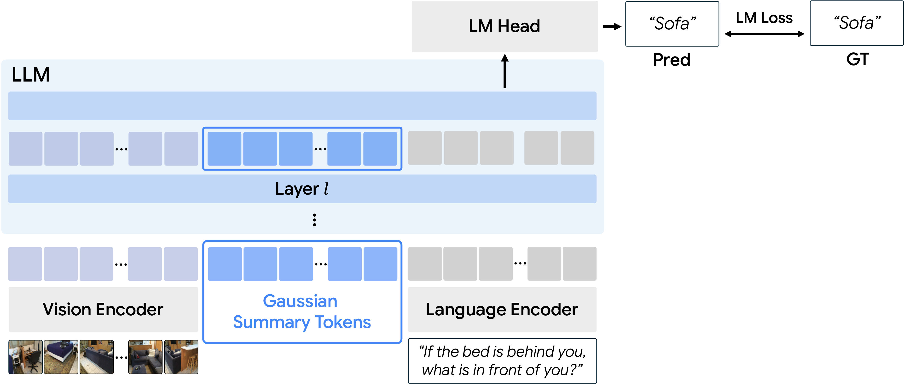
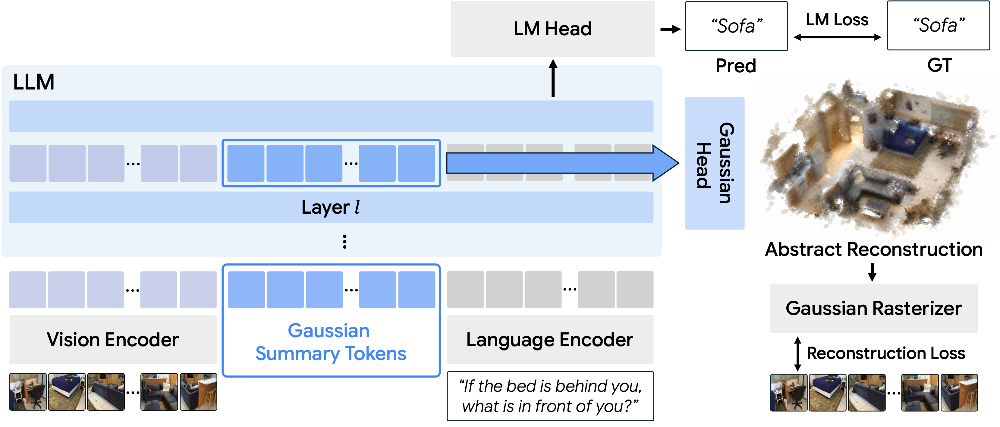
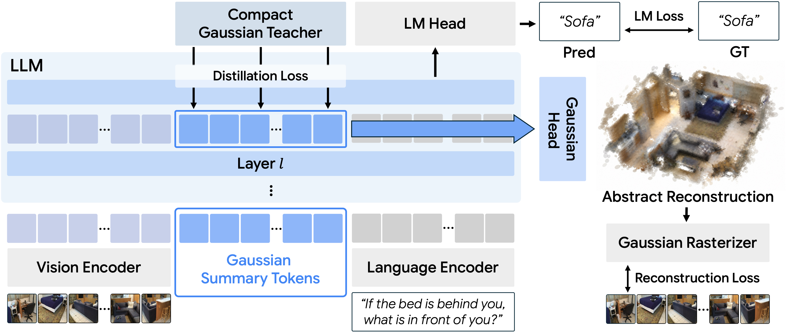
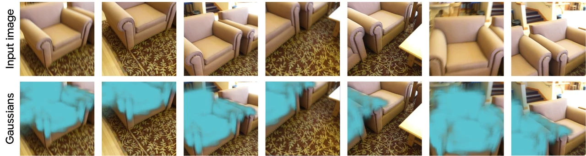
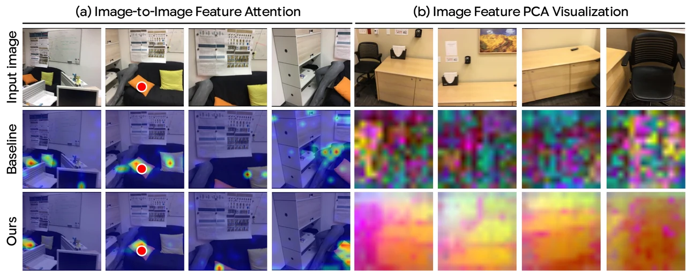
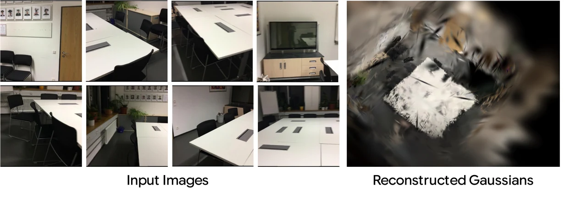

SPAR · overall accuracy
68.5%
+5.2 points over 3DThinker, the strongest prior result listed.
NeurIPS 2026
Teaching MLLMs to imagine 3D scenes before answering
For 3D understanding, we teach a multimodal LLM to build a compact 3D representation inside its hidden states, making it to understand how the scene is structured in 3D before answering questions.
Motivation
To answer 3D questions from multi-view images, we need to understand how the views fit together into a single scene.
Cognitive studies suggest that people mentally assemble a coarse layout of the scene, using relationships between objects and information across viewpoints to understand space. Inspired by this, we explore whether MLLMs can also build a coarse layout of the scene: identify recurring objects, infer how they relate, and assemble the scene without reproducing every visual detail. We ask whether building such a coarse layout helps them understand multi-view images.
The idea in motion
Make coarse reconstruction part of reasoning.



{{ archDescription }}
At inference: the teacher is removed. The Gaussian decoder is optional for answering; it is only needed to produce a reconstruction.
{{ mNote }}
{{ lNote }}
Paper ablations: SQA3D exact match and SPAR overall accuracy (%). The default uses 32 views, 6,720 image tokens and 2,592 summary tokens; each summary token decodes to 32 Gaussians.
Results
A compact scene representation improves spatial question answering, with gains that persist in controlled comparisons.
68.5%
+5.2 points over 3DThinker, the strongest prior result listed.
63.8%
+7.3 points over our matched baseline (56.5%).
39.2%
+2.6 points over Ross3D (36.6%).
Overall accuracy (%)
Accuracy (%), on a shared 0–100 scale. “—” means not reported. Models differ in size and training; these are benchmark comparisons, not controlled ablations.
All metrics below are higher-is-better. Tables scroll horizontally on small screens.
| Benchmark | SQA3D | Real-3DQA | ScanQA | ||||||
|---|---|---|---|---|---|---|---|---|---|
| Method | EM | EM-R | EM | EM-R | CIDEr | B-4 | METEOR | ROUGE | EM |
| Specialists | |||||||||
| SQA3D | 46.6 | – | – | – | – | – | – | – | – |
| ScanQA | – | – | – | – | 64.9 | 10.1 | 13.1 | 33.3 | 21.1 |
| 2D LMMs | |||||||||
| InternVL2-8B | 33.0 | 45.3 | – | – | 62.5 | 3.3 | 14.5 | 34.3 | – |
| Qwen2-VL-7B | 40.7 | 46.7 | – | – | 53.9 | 3.0 | 11.4 | 29.3 | – |
| LLaVA-Video-7B | 48.5 | – | – | – | 88.7 | 3.1 | 17.7 | 44.6 | – |
| 3D LMMs | |||||||||
| Scene-LLM | 53.6 | – | – | – | 80.0 | 11.7 | 15.8 | 35.9 | 27.2 |
| LL3DA | – | – | – | – | 76.8 | – | 15.9 | 37.3 | – |
| LEO | 50.0 | 52.4 | – | – | 80.0 | 11.5 | 16.2 | 39.3 | 21.5 |
| ChatScene | 54.6 | 57.5 | – | – | 87.7 | 14.3 | 18.0 | 41.6 | 21.6 |
| Grounded 3D-LLM | – | – | – | – | 72.7 | 13.4 | – | – | – |
| LLaVA-3D | 55.6 | 57.6 | – | – | 91.7 | 14.5 | 20.7 | 50.1 | 27.0 |
| Video-3D-LLM | 58.6 | – | 31.2 | 36.4 | 102.1 | 16.4 | 20.0 | 49.3 | 30.1 |
| 3DRS | 60.6 | – | – | – | 104.8 | – | – | – | 30.3 |
| Ross3D | 63.0 | 65.7 | 36.6 | 41.5 | 107.0 | 17.9 | 20.9 | 50.7 | 30.8 |
| Imagine3D-LLM (ours) | 63.8 | 66.4 | 39.2 | 44.3 | 109.3 | 20.5 | 21.3 | 49.7 | 29.9 |
| Benchmark | Scan2Cap · IoU 0.5 | ScanRefer | Multi3DRefer | |||||
|---|---|---|---|---|---|---|---|---|
| Method | ROUGE | B-4 | METEOR | CIDEr | Acc@0.25 | Acc@0.5 | F1@0.25 | F1@0.5 |
| Specialists | ||||||||
| Scan2Cap | 44.5 | 23.3 | 22.0 | 35.2 | – | – | – | – |
| 3DJCG | 50.8 | 31.0 | 24.2 | 49.5 | 49.6 | 37.3 | – | 26.6 |
| ScanRefer | – | – | – | – | 37.3 | 24.3 | – | – |
| M3DRef-CLIP | – | – | – | – | 51.9 | 44.7 | 42.8 | 38.4 |
| 3D LMMs | ||||||||
| LL3DA | 55.1 | 36.8 | 26.0 | 65.2 | – | – | – | – |
| Grounded 3D-LLM | – | – | – | – | 47.9 | 44.1 | 45.2 | 40.6 |
| LEO | 58.1 | 38.2 | 27.9 | 72.4 | – | – | – | – |
| ChatScene | 58.1 | 36.3 | – | 77.1 | 55.5 | 50.2 | 57.1 | 52.4 |
| LLaVA-3D | 63.4 | 41.1 | 30.2 | 79.2 | 54.1 | 42.4 | – | – |
| Video-3D-LLM | 62.3 | 42.4 | 28.9 | 83.8 | 58.1 | 51.7 | 58.0 | 52.7 |
| VG-LLM | 62.6 | 41.5 | 28.9 | 80.0 | – | – | – | – |
| 3DRS | – | 41.6 | – | 86.1 | – | – | – | – |
| Ross3D | 66.9 | 43.4 | 30.3 | 81.3 | 61.1 | 54.4 | 59.6 | 54.3 |
| Imagine3D-LLM (ours) | 67.6 | 48.3 | 32.6 | 99.2 | 62.8 | 56.3 | 60.2 | 55.0 |
EM: exact match; EM-R: refined exact match; B-4: BLEU-4. Captioning scores are reported at IoU 0.5; grounding columns indicate their IoU thresholds. SQA3D and Real-3DQA use test splits; ScanQA, Scan2Cap, ScanRefer and Multi3DRefer use validation splits. General-purpose 2D LMMs in the question-answering table are evaluated zero-shot. See the paper for method references.
Learning to reconstruct is what improves understanding.
Every variant uses the same MLLM backbone and training data. The baseline learns to answer from images with language modeling alone. We compare four variants to isolate how 3D information contributes:
| Variant | SQA3D | SPAR |
|---|---|---|
| Baseline | 56.5 | 60.9 |
| + Teacher tokens as input | 56.4 | 60.8 |
| + Distillation only | 56.6 | 60.5 |
| + Reconstruction (4 ep.) | 63.7 | 67.9 |
| Full (ours, 1 ep.) | 63.8 | 68.5 |
SQA3D exact match and SPAR overall accuracy (%). All variants retain language modeling.
SQA3D exact match (%)
Training epochs
Similar SQA3D accuracy in one epoch instead of four. Epochs measure passes through the training data.
Teacher inputs or distillation alone leave performance close to the baseline. Reconstruction-only training reaches 63.7 SQA3D after four epochs; the full model reaches 63.8 after one. Reconstruction drives the gain, and teacher distillation accelerates learning.
Inside the model
The reconstruction objective encourages cross-view correspondence and object-level grouping within the model’s visual features.
We apply k-means to the Gaussian summary tokens after training, then render the Gaussians decoded from a selected cluster.
Across the input views, this cluster captures the sofa, despite receiving no object labels or clustering supervision. The visualization suggests that compact summary tokens bring recurring scene content together into an object-level representation, instead of treating each view independently.

Only the Gaussian summary tokens receive direct 3D reconstruction supervision, yet the image features improve too.
On the left, the red point is the query: our attention weights concentrate more sharply on the corresponding object in other views. On the right, PCA maps image features to RGB, revealing more consistent, semantically structured regions than the baseline.

Input views
Drag the divider or use the arrow keys. Move left to reveal more Imagine3D-LLM; move right for more Baseline.
The red point marks the query location. Warmer colours indicate higher attention weights; sharper focus on the corresponding object indicates stronger cross-view correspondence.
Input views
Drag the divider or use the arrow keys. Move left to reveal more Imagine3D-LLM; move right for more Baseline.
PCA maps the first three principal components to RGB. Within each model, similar colours indicate similar feature representations, not assigned object labels.
The learned representation captures coarse scene geometry and object layout. It is intended to support spatial reasoning rather than photorealistic rendering.

Citation
TBD